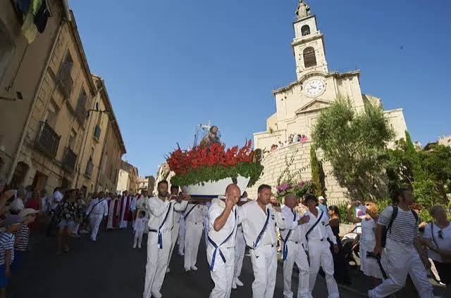

Saint-Pierre
à SèteFête des pêcheurs & joutes nautiques


⟹ Fêtes & traditions ⟸
À Sète, la Saint-Pierre est la grande fête des pêcheurs et des gens de mer. Elle s’inscrit dans une tradition chrétienne très ancienne : saint Pierre, apôtre que les Évangiles présentent comme pêcheur sur le lac de Tibériade avant de suivre le Christ, est devenu dans de nombreuses communautés littorales le patron protecteur des pêcheurs. Sa fête liturgique, célébrée le 29 juin avec saint Paul, a donné naissance dans de nombreux ports méditerranéens à des processions, bénédictions de bateaux et hommages aux marins disparus.
À Sète, cette dévotion prend une signification particulière dans une ville née autour de son port et profondément façonnée par la pêche. Le Môle, la Criée, les quais, les chalutiers et les familles de marins constituent le cadre social dans lequel la fête s’est développée. Les apports successifs de populations méditerranéennes, notamment italiennes, ont également enrichi la culture maritime sétoise et ses formes de religiosité populaire.

La forme contemporaine de la célébration porte le nom de Grand Pardon de la Saint-Pierre. Elle est fondée en 1948, dans le contexte de l’après-guerre, par l’Amicale des Pêcheurs Sète-Môle. Les documents de l’Amicale citent parmi les présidents fondateurs Joseph Nocca, Maximin Licciardi, Roger Stento et Ernest Azais, ainsi que plusieurs membres fondateurs issus du monde de la pêche. Cette origine associative explique le caractère profondément professionnel, familial et communautaire de la manifestation.
À l’origine, la fête associe déjà étroitement le religieux et le populaire. Les organisateurs prennent contact avec les autorités ecclésiastiques pour la célébration de la messe, tandis qu’une grande fête foraine accompagne les cérémonies. Dans les premières décennies, les autorités militaires occupent également une place d’honneur dans le défilé et lors du dépôt de gerbes en mer, témoignage du cérémonial public de l’après-guerre.
Le mot « pardon », employé dans plusieurs traditions maritimes françaises, souligne la dimension de pèlerinage, de protection et de mémoire. À Sète, le Grand Pardon ne se limite pas à demander la protection du saint : il rappelle les dangers du métier, les naufrages, les accidents et tous ceux qui ne sont pas revenus de mer. Cette mémoire des disparus constitue l’un des fils conducteurs les plus forts de la fête.
Le cérémonial s’est transmis autour de plusieurs gestes emblématiques. La statue de saint Pierre est portée en procession dans les rues par des membres de la communauté maritime. Le cortège, accompagné de musique, de bannières, de délégations et de familles, relie symboliquement les quartiers de pêcheurs, l’église, la Criée et le port. Les enfants peuvent être associés aux défilés dans des costumes évoquant les pêcheurs et poissonnières d’autrefois, donnant à la transmission familiale une place visible.
Après la grande messe vient l’un des moments les plus attendus : la procession en mer. Chalutiers et autres embarcations sont pavoisés de pavillons et de guirlandes. Une flottille accompagne la sortie au large, où sont bénis les bateaux et où des gerbes de fleurs sont déposées à la mémoire des marins et pêcheurs disparus. Ce geste transforme la Méditerranée elle-même en lieu de mémoire.
La fête est ainsi indissociable de la solidarité des gens de mer. Pendant des générations, le métier de pêcheur a exposé les équipages aux tempêtes, aux accidents, aux pertes de navires et à l’incertitude économique. La Saint-Pierre rappelle cette vulnérabilité tout en célébrant le courage, l’entraide entre équipages, la continuité des familles et la transmission des savoir-faire maritimes.
Au religieux s’ajoute une importante dimension populaire. Joutes nautiques, musique, retraite aux flambeaux, fête foraine, rencontres associatives et animations de quartier prolongent traditionnellement les cérémonies. La Saint-Pierre dialogue ainsi avec une autre grande tradition sétoise : les joutes languedociennes, qui font de l’eau et des quais un espace de spectacle, de compétition et d’identité collective.
Le Grand Pardon s’inscrit aussi dans un ensemble de fêtes de la Saint-Pierre présentes autour du bassin de Thau et sur le littoral méditerranéen. Mèze, Bouzigues, Marseillan et d’autres communes entretiennent elles aussi des traditions liées au patron des pêcheurs. Chaque port possède ses usages, mais on retrouve les mêmes thèmes : bénédiction, bateaux pavoisés, hommage aux disparus, convivialité et affirmation de l’identité maritime.
Au fil des décennies, les transformations de la pêche sétoise — modernisation des flottilles, évolution des techniques, crises de la ressource, diminution du nombre de professionnels — ont renforcé la valeur patrimoniale de la fête. Elle est devenue non seulement une célébration des pêcheurs en activité, mais également une manière de conserver la mémoire d’un monde portuaire qui a profondément façonné Sète.
La continuité de l’Amicale des Pêcheurs Sète-Môle joue ici un rôle essentiel. Fondée en 1948, elle maintient l’organisation, les responsabilités cérémonielles et la transmission entre générations. En 2023, la manifestation célébrait sa 75e édition ; en 2026, elle était présentée comme le 78e Grand Pardon. Cette longévité fait de la Saint-Pierre l’un des grands rendez-vous du patrimoine maritime vivant sétois.
La fête doit enfin être distinguée de la Saint-Louis, autre grande célébration de Sète, organisée en août et fortement associée aux joutes. La Saint-Pierre appartient d’abord au monde des pêcheurs et à la mémoire des gens de mer ; la Saint-Louis renvoie davantage au patronage civique de la ville et à son grand tournoi de joutes. Ensemble, ces deux fêtes expriment deux facettes complémentaires de l’identité sétoise : la ville-port et la ville des jouteurs.
Depuis 1948, le Grand Pardon fait de la mer un lieu de prière, de mémoire et de transmission : une fête où Sète honore à la fois son saint protecteur, ses pêcheurs et ceux qui ne sont jamais revenus au port.
— Synthèse historique — L’Âme des RégionsUn parcours entre ville et mer. Le cérémonial associe dépôts de gerbes, transfert et procession de la statue, grand-messe, cortège jusqu’à la criée puis sortie en mer d’une flottille pavoisée. Le dépôt de gerbe en mer constitue le moment mémoriel le plus fort : il rend hommage aux marins disparus et donne au Grand Pardon sa dimension à la fois religieuse, professionnelle et collective.
Les joutes languedociennes sont indissociables de Sète. La tradition locale fait remonter leur présence aux fêtes d’inauguration du port en 1666. Deux barques propulsées par des rameurs se croisent ; sur la tintaine, plateforme élevée à l’arrière, chaque jouteur tente de faire tomber son adversaire à l’eau à l’aide d’une lance et d’un pavois.
À la Saint-Pierre, les joutes jouent un rôle de transmission. Les tournois de jeunes, les rencontres régionales et les animations d’initiation montrent que cette pratique n’est pas un folklore figé : elle demeure organisée en sociétés, avec apprentissage, catégories et calendrier sportif.
Le hautbois languedocien et le tambour accompagnent traditionnellement les passes et les défilés. Cette dimension musicale donne aux tournois une identité sonore immédiatement reconnaissable sur les quais.